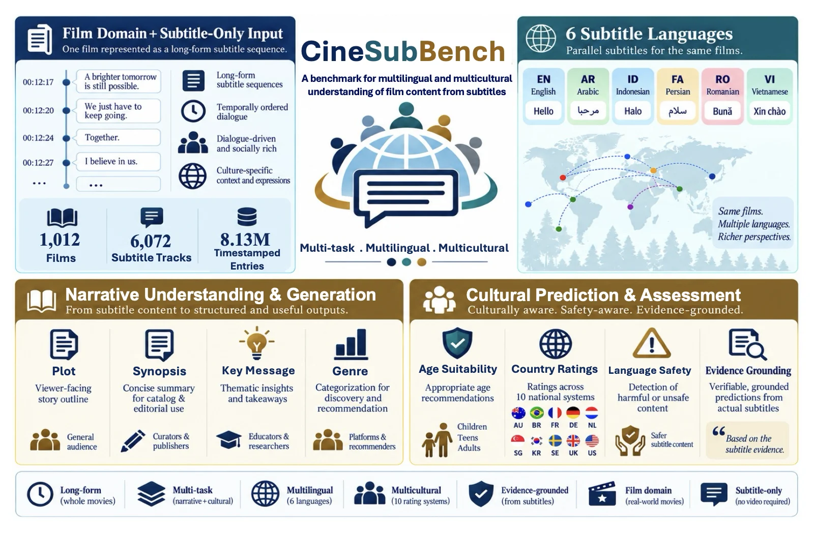
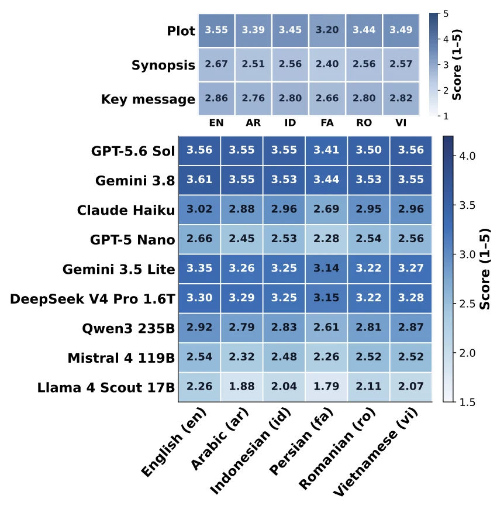
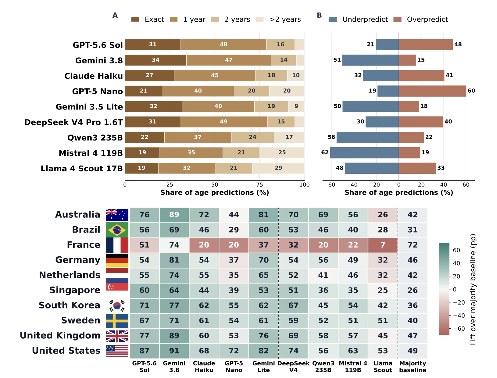
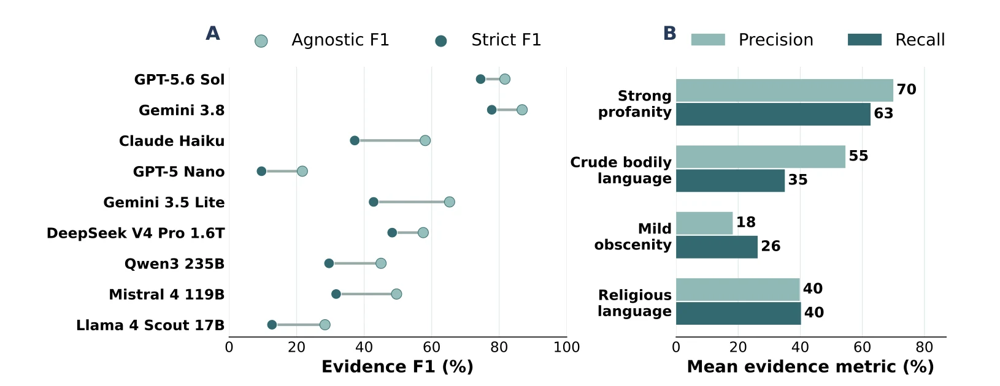

Plot, synopsis, key message
Recover the premise, spoiler-aware narrative arc, and central theme from a long subtitle track.
Long-form film understanding from subtitles
Evaluating LLMs on long-form narrative and cultural understanding from multilingual movie subtitles
1 University of Alberta 2 Independent Researcher

Movie subtitles are long, ordered records of dialogue, but they do not explicitly identify speakers, scenes, or events. CineSubBench uses this demanding subtitle-only input to ask whether a model can reconstruct a story, make culturally situated predictions, and point to the lines behind a safety judgment.
The benchmark holds the film set constant across seven tasks, six languages, and ten national rating systems. Its 1,012 films provide 6,072 subtitle tracks and 8.13 million timestamped entries. This matched design makes task and language differences easier to examine without changing the underlying films.
A strong overall score does not guarantee complete plot reconstruction, reliable cross-language behavior, culturally calibrated ratings, or correctly categorized subtitle evidence.
The paper's composite ranking combines distinct capabilities. Use the task columns to see where models differ; a medal marks the original composite rank, even when a column is sorted.
Open-weight Closed
| 1 | Gemini 3.8 Flash | Closed frontier | 78.04 | 4.16 | 3.34 | 3.11 | 3.54 | 84.93 | 34.25 | 81.42 | 0.93 | 77.87 | 0.31 | 86.8 | 77.8 |
|---|---|---|---|---|---|---|---|---|---|---|---|---|---|---|---|
| 2 | GPT-5.6 Sol | Closed frontier | 74.70 | 4.10 | 3.40 | 3.08 | 3.52 | 81.55 | 31.08 | 78.75 | 0.98 | 65.42 | 0.44 | 81.7 | 74.5 |
| 3 | DeepSeek V4 Pro 1.6T | Open-weight | 65.52 | 3.91 | 2.93 | 2.90 | 3.25 | 81.63 | 30.67 | 79.33 | 0.98 | 58.03 | 0.52 | 57.5 | 48.3 |
| 4 | Gemini 3.5 Flash Lite | Closed baseline | 64.70 | 3.83 | 2.91 | 2.99 | 3.25 | 80.92 | 31.83 | 72.17 | 1.09 | 64.65 | 0.46 | 65.3 | 42.8 |
| 5 | Claude Haiku 4.5 | Closed frontier | 57.50 | 3.45 | 2.44 | 2.84 | 2.91 | 71.45 | 27.42 | 72.75 | 1.16 | 54.32 | 0.57 | 58.1 | 37.2 |
| 6 | Qwen3 235B | Open-weight | 53.09 | 3.36 | 2.30 | 2.76 | 2.80 | 68.28 | 22.00 | 59.25 | 1.47 | 47.88 | 0.64 | 45.0 | 29.6 |
| 7 | Mistral 4 119B | Open-weight | 50.67 | 2.80 | 2.00 | 2.52 | 2.44 | 66.83 | 19.42 | 54.50 | 1.78 | 47.37 | 0.68 | 49.6 | 31.7 |
| 8 | GPT-5 Nano | Closed baseline | 46.67 | 2.97 | 1.90 | 2.64 | 2.50 | 72.43 | 20.67 | 60.75 | 1.56 | 43.87 | 0.76 | 21.7 | 9.6 |
| 9 | Llama 4 Scout 17B | Open-weight | 41.58 | 2.21 | 1.67 | 2.20 | 2.03 | 66.92 | 18.58 | 50.25 | 1.93 | 34.12 | 0.93 | 28.4 | 12.7 |
Narrative, genre, age, and country results average the six language settings. Safety evidence uses English subtitles only. The composite equally weights normalized narrative, genre, cultural, and strict safety scores; the cultural component combines normalized age MAE and country exact match. Lower MAE is better. See the paper for metric definitions.
Recover the premise, spoiler-aware narrative arc, and central theme from a long subtitle track.
Identify the film's genres using the subtitle sequence rather than metadata or video.
Predict the Common Sense Media minimum recommended age separately from formal ratings in ten national systems.
Count four lexical categories and cite the exact English subtitle entries supporting each judgment.
Subtitle languages: English, Arabic, Indonesian, Persian, Romanian, and Vietnamese.
Rating systems: Australia, Brazil, France, Germany, Netherlands, Singapore, South Korea, Sweden, United Kingdom, and United States.
Safety categories: strong profanity, crude bodily language, mild obscenity, and religious profanity or exclamation.
Each film is evaluated through the same six subtitle-language conditions. Narrative outputs are written in English, regardless of input language. Plot, synopsis, and key message receive reference-based 1-5 scores from a common LLM judge (GPT-5.6 Luna) using task-specific rubrics. In a 50-film independent-judge audit, 56.8% of paired scores matched exactly and 98.4% were within one point.
Genre uses micro-F1; age suitability uses exact match, accuracy within one year, and MAE; national ratings use exact match and ordinal MAE within each country's label space. Safety evidence uses F1 both with and without requiring the correct lexical category.
No. Gemini 3.8 Flash leads the composite score at 78.04, while GPT-5.6 Sol has the best synopsis score (3.40/5). DeepSeek V4 Pro is third overall, yet slightly exceeds Sol on genre F1 and age accuracy within one year. The task columns reveal differences hidden by the composite rank.
Across all nine models, mean narrative scores are lower in the five non-English settings than in English, though the smallest paired gaps are uncertain. Persian is the lowest narrative setting for every evaluated model. Models recover the plot premise more reliably than a full event-complete synopsis. The LLM judge's diagnostic tags mark a missing major event in 79.7% of judged synopses and an invented one in 71.1%.

Near-match age accuracy can hide different directions of error. In the ten national systems, raw accuracy must be compared with each country's label distribution: France has 31.6% mean model exact match against a 72.0% majority baseline, while Brazil shows meaningful gains over a much lower baseline.

For one film and one model (GPT-5.6 Sol), changing only the subtitle input from English to Vietnamese changes four national-rating predictions from mismatches to matches and corrects the age prediction.
Reference age: 17+.
Finding a relevant subtitle line and assigning it the correct safety category are different abilities. The leading model reaches 86.8% category-agnostic evidence F1 but 77.8% strict F1. Strong profanity is much easier to ground than mild obscenity, exposing a failure mode hidden by a single safety score.

The dataset joins IMDb metadata and national ratings, Common Sense Media age guidance, Kids-in-Mind language-content metadata, and subtitles from OpenSubtitles with SubDL recovery. Construction checks timing, coverage, encoding, language, and content, followed by manual review. A typical subtitle input is roughly 40,000 to 45,000 prompt tokens; some exceed 100,000.
Titles, years, cast, and reference answers are withheld from standard inputs, but models may still recognize familiar films. In a separate 50-film probe, title/year-only narrative scores stayed close to subtitle-only scores for several models, and genre F1 was 2.5 to 11.0 percentage points higher for all five tested models.